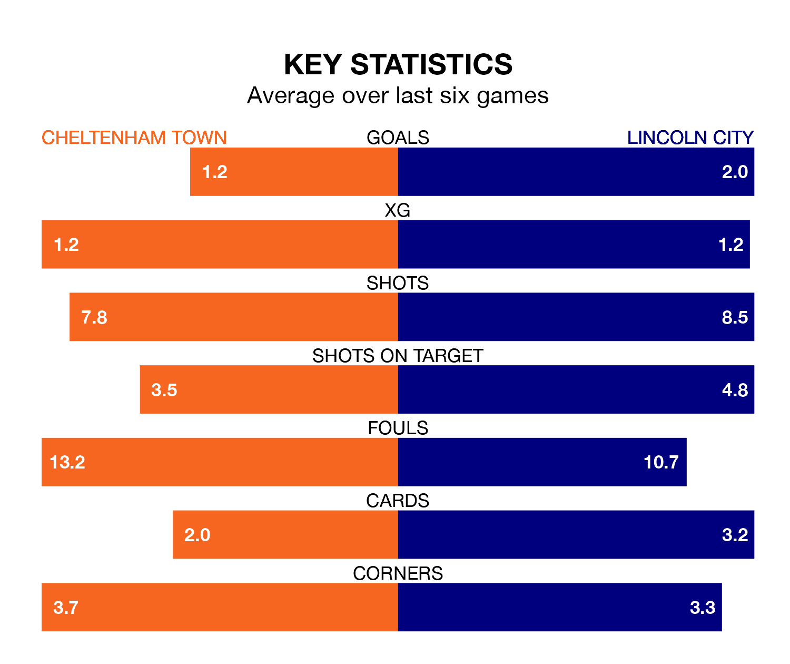

Struggling Cheltenham Town face Lincoln City at the Completely-Suzuki Stadium on Saturday looking to build on a win in their last league outing.
After securing all three points with a 2-1 victory over Burton Albion on Tuesday, the Robins sit 21st in EFL League One.
They travel to play a Lincoln side seventh in the standings, who also won their last match, 1-0 against Oxford United.
With Lukas Jensen between the sticks, Lincoln can rely on one of the league's safest pair of hands. He has kept 19 clean sheets in his 43 appearances this season, and no 'keeper has prevented the opposition scoring more often in EFL League One.
In Cheltenham's net, Luke Southwood has nine clean sheets in 43 games. He has conceded a goal every 69 minutes, 80% more often than the 121 minutes between goals for Jensen.
With 37 goals in 43 games so far this season, Town are the league's third-lowest scorers with 0.9 goals per game. And they are conceding more than average, letting in 61 goals at a rate of 1.4 per game.
City, meanwhile, are above average scorers, with 1.4 goals per game, compared to a league average of 1.3. They have conceded 0.8 goals per game.
In the last 10 years, Cheltenham and Lincoln have played each other on 11 occasions. Cheltenham won two of them, Lincoln five, and they drew four times.
On average, the Robins scored 0.7 goals and the Imps 1.4 in those matches.
Their last meeting was on September 30, when Lincoln won 2-0 at home.
The Robins are in disappointing form in EFL League One, with two wins and four losses from their last six games.
With four wins and a draw over that period, the Imps' form is much better – they have taken 13 points from 18, compared to the hosts' six.
Updated: 15:40 (UTC), 18/04/24